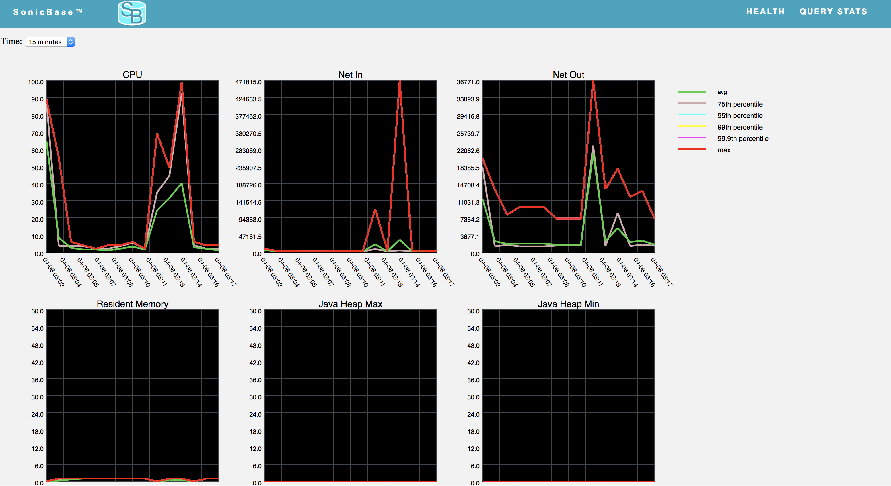

Stats include:
- CPU
- Network Bytes In
- Network Bytes Out
- Resident Memory
- Java Heap Min
- Java Heap Max
- Disk Available
Various percentiles of each stat are included in the graphs.
You may specifiy the time interval of the stats you wan to view. Intervals include 15 minutes, 1 hour, etc...
